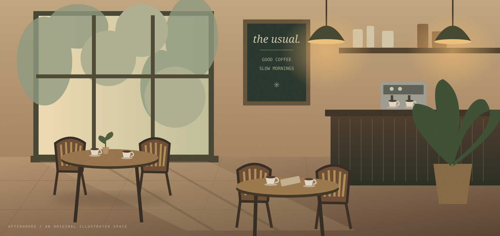
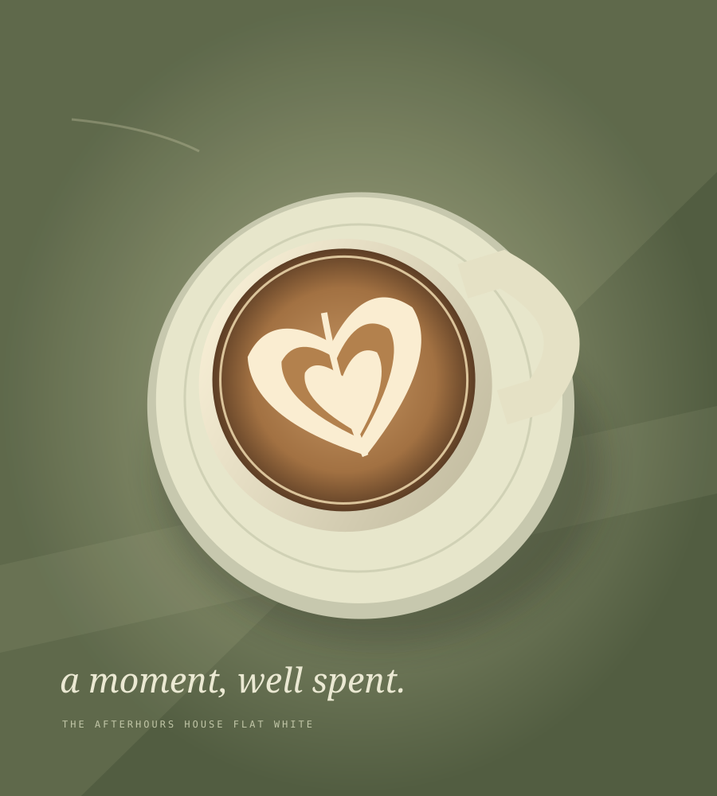

COFFEE. COMPANY. NO PARTICULAR HURRY.
A little longer.
A little slower.

GOOD THINGS TAKE A MOMENT.STAY FOR ONE MORE.
COME FOR
THE COFFEE.
STAY.
THE COFFEE.
STAY.
01 / YOUR NEW USUALA NEIGHBOURHOOD CAFÉ CONCEPTEST. IN OUR IMAGINATION, 2026 ↗

03 / ROOM TO JUST BE
Bring a book.
Bring a friend.
Bring yourself.
A sunlit table for your next big idea. A quiet corner for absolutely no ideas. Afterhours is a fictional neighbourhood space designed around the simple pleasure of being somewhere good.
04 / A LITTLE OCCASION
Your people.
Our place.
A birthday without the fuss. A team catch-up that actually feels like one. Plan a small gathering and leave with a clear inquiry brief.
Interactive planning demo. No booking or payment is made.
MORE THAN A COFFEE BREAK.